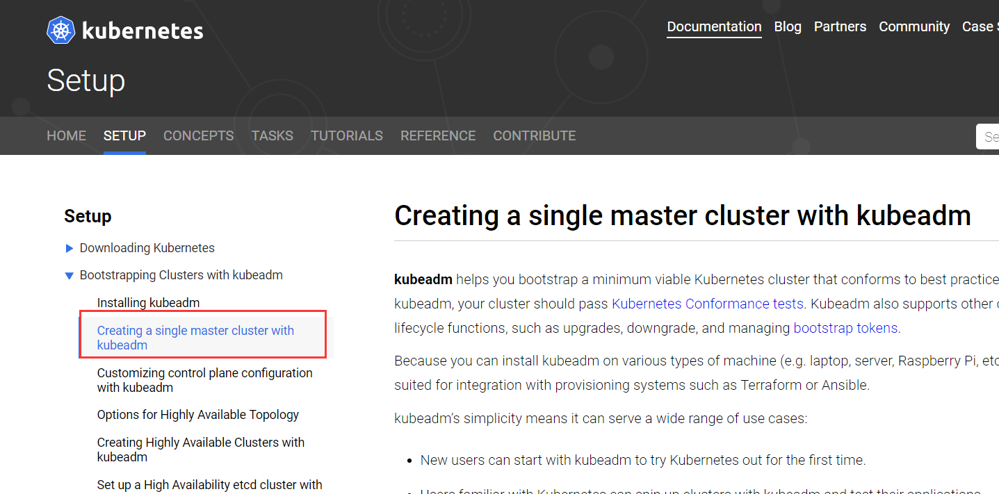

网络
K8S采用的基于扁平地址空间的网络模型，集群中的每个Pod都有自己的IP地址，Pod之间不需要配置NAT就能直接通信。
同一个Pod中的容器共享Pod的IP，能够通过localhost通信。
K8S网络模型
Pod内不同容器之间的通信
Pod被调度到某个节点，Pod中的所有容器都在这个节点运行。
容器共享相同本地文件系统、网络命名空间和IPC
不同Pod之间不存在端口冲突，因为Pod都有自己的IP
Pod之间的通信
Pod得IP是集群可见，即集群中的任何其他Pod和节点都可以通过IP直接与Pod通信。
Pod内部和外部使用的是同一个IP
Pod与Service的通信
Pod间直接通过IP地址通信，但前提是直到对方IP。
Service提供了访问Pod的抽象层，无论后端Pod如何变化，Service都作为稳定的前端对外提供服务。
Service还提供了高可用和负载均衡功能。负责将请求转发给正确的Pod
外部访问
无论是Pod还是Service对于K8S之外的世界来说都是私有的IP
K8s提供了两种方式让外界能够与Pod通信
NodePort
Service通过Cluster节点的静态端口对外提供服务，外部可以通过
LoadBalancer
Service利用cloud provider提供的load balancer对外提供服务，cloud provider负责将load balancer的流量导向Service。目前支持的cloud provider有GCP、AWS、Azur等。
网络方案
K8S采用了Container Networking Interface(CNI）规范
CNI是由CentOs提出的容器网络规范，使用插件（Plugin）模型创建容器的网络栈。
Network Policy
Network Policy通过Label选择Pod,并指定其他Pod或外界如何与这些Pod通信
当为Pod定义了Network Policy时，只有Policy允许的流量才能访问Pod
不是所有的网络方案都支持，比如Flanne不支持
部署Canal
Canal:用Flannel实现K8S集群网络，用Calico实现Network Policy
没有太好的办法直接切换使用不同的网络方案，基本上只能重建集群
kubeadm init --apiserver-advertise-address 192.168.129.132 --pod-network-cidr=10.244.0.0/16
查看文档安装网络

kubectl apply -f https://docs.projectcalico.org/v3.3/getting-started/kubernetes/installation/hosted/canal/rbac.yaml
kubectl apply -f https://docs.projectcalico.org/v3.3/getting-started/kubernetes/installation/hosted/canal/canal.yaml
部署之后查看Canal
kubectl get --namespace=kube-system daemonset canal
kubectl get --namespace=kube-system pod -o wide|grep canal
注意：
会出现拉取镜像失败，提前拉取修改tag
实践Network Policy
部署一个httpd应用，配置文件httpd.yaml
httpd有三个副本，通过NodePort类型的Service对外提供服务
apiVersion: apps/v1beta1
kind: Deployment
metadata:
name: httpd
spec:
replicas: 3
template:
metadata:
labels:
run: httpd
spec:
containers:
- name: httpd
image: httpd:latest
imagePullPolicy: IfNotPresent
ports:
- containerPort: 80
---
apiVersion: v1
kind: Service
metadata:
name: httpd-svc
spec:
type: NodePort
selector:
run: httpd
ports:
- protocol: TCP
nodePort: 30000
port: 8080
targetPort: 80
kubectl apply -f httpd.yaml
kubectl get pod -o wide
kubectl get service httpd-svc
当前没定义Network Policy，验证应用可以被访问
1.启动一个Busybox Pod，既可以访问Service,也可以Ping到副本Pod
kubectl run busybox --rm -ti --image=busybox /bin/sh
wget httpd-svc:8080
ping PodIP
2.集群节点既可以访问Service,也可以Ping到副本Pod
curl IP:8080
ping -c 3 PodIP
3.集群外可以访问Service
curl IP:30000
创建Network Policy
apiVersion: networking.k8s.io/v1
kind: NetworkPolicy
metadata:
name: access-httpd
spec:
podSelector:
matchLabels:
#定义将此Network Policy中的访问规则应用于label为run:httpd的pod，即httpd应用的三个副本Pod
run: httpd
ingress:
- from:
- podSelector:
matchLabels:
#ingress中定义只有label为access:"true"的Pod才能访问
access: "true"
ports:
- protocol: TCP
#只能访问80端口
port: 80
kubectl apply -f policy.yaml
kubectl get networkpolicy
1.busybox Pod已经不能访问Service
kubectl run busybox --rm -ti --image=busybox /bin/sh
wget httpd-svc:8080
timeout
如果Pod添加了label access:"true"就能访问到应用
kubectl run busybox --rm -ti --labels="access=true" --image=busybox /bin/sh
2.集群节点和集群外都已经无法访问Service
希望能够访问，需要修改如下
apiVersion: networking.k8s.io/v1
kind: NetworkPolicy
metadata:
name: access-httpd
spec:
podSelector:
matchLabels:
#定义将此Network Policy中的访问规则应用于label为run:httpd的pod，即httpd应用的三个副本Pod
run: httpd
ingress:
- from:
- podSelector:
matchLabels:
#ingress中定义只有label为access:"true"的Pod才能访问
access: "true"
- ipBlock:
cidr: 集群主机网关（192.168.129.132/24）
ports:
- protocol: TCP
#只能访问80端口
port: 80
测试集群节点和外网访问